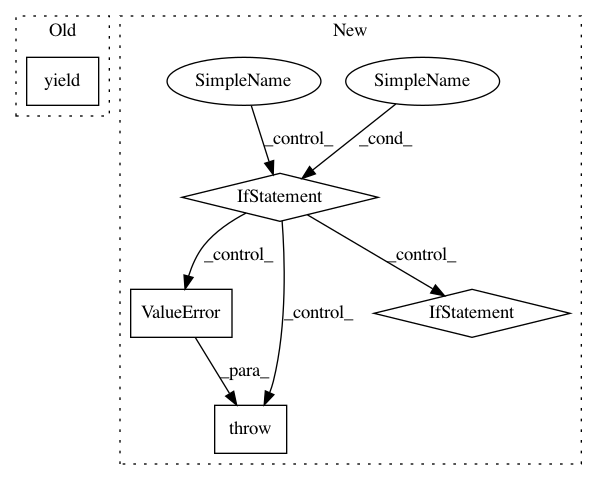

59a4736028fea991396643e361d0488c7c96736d,nilmtk/elecmeter.py,ElecMeter,power_series,#ElecMeter#,297
Before Change
series = chunk.icol(0).dropna()
series.timeframe = getattr(chunk, "timeframe", None)
series.look_ahead = getattr(chunk, "look_ahead", None)
yield series
def dry_run_metadata(self):
return self.metadata
After Change
"measurement_ac_type_prefs", None)
preprocessing = kwargs.pop("preprocessing", [])
load_all_power_columns = kwargs.pop("load_all_power_columns", False)
if load_all_power_columns:
if measurement_ac_type_prefs:
raise ValueError("Cannot specify `load_all_power_columns` and"
" `measurement_ac_type_prefs` together.")
if kwargs.has_key("cols"):
raise ValueError("Cannot specify `load_all_power_columns` and"
" `cols` together.")
if kwargs.has_key("cols") and measurement_ac_type_prefs:
raise ValueError("Cannot specify `cols` and"
" `measurement_ac_type_prefs` together.")
In pattern: SUPERPATTERN
Frequency: 3
Non-data size: 5
Instances
Project Name: nilmtk/nilmtk
Commit Name: 59a4736028fea991396643e361d0488c7c96736d
Time: 2014-12-02
Author: jack-list@xlk.org.uk
File Name: nilmtk/elecmeter.py
Class Name: ElecMeter
Method Name: power_series
Project Name: pantsbuild/pants
Commit Name: 6a5d77c31e772cec5fedbf149f3d41108c5aae8c
Time: 2018-05-16
Author: dawagner@gmail.com
File Name: tests/python/pants_test/engine/test_isolated_process.py
Class Name:
Method Name: javac_compile_process_result
Project Name: HazyResearch/fonduer
Commit Name: 8946a24d7c1a21a80ccaf86418c354cf87e84bfa
Time: 2018-09-04
Author: lwhsiao@stanford.edu
File Name: src/fonduer/supervision/labeler.py
Class Name: LabelerUDF
Method Name: apply